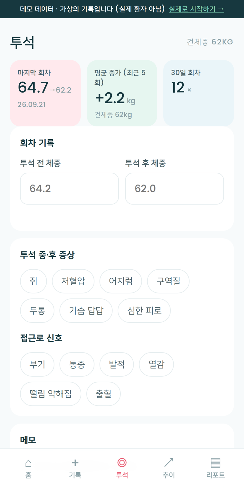
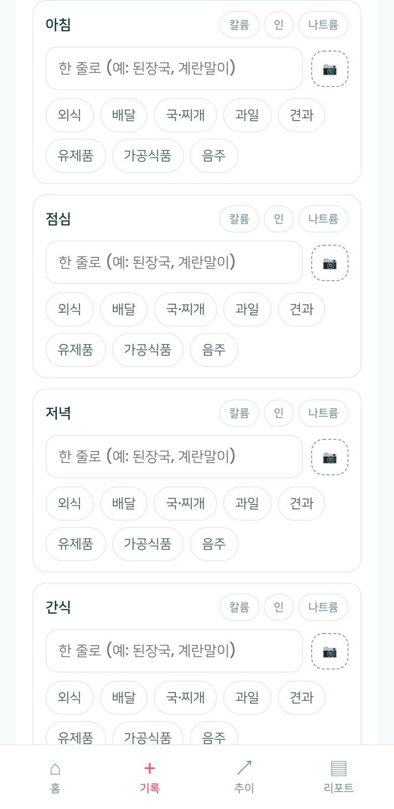

My Beanie의 기본 화면은 투석 이전 단계의 관리에 맞춰져 있습니다. 투석 중인 사용자를 위해서는 설정에서 "투석 기록"을 켜면 전용 화면이 추가됩니다. 투석 중이 아니라면 꺼둔 상태가 기본입니다.
콩팥 건강이 걱정되는 누구나 쓰는 앱이 되려면 첫 화면에는 혈압·체중·식사처럼 모든 사용자에게 해당하는 항목만 있어야 합니다. 투석 기록은 그 위에 선택적으로 추가되는 층입니다.
혈압·체중·검사 수치·몸의 신호·끼니별 식사. 투석 기록을 켜지 않으면 앱 어디에도 투석 관련 항목이 표시되지 않습니다.
설정 > 추가 기능 · 투석 기록에서 혈액투석 또는 복막투석을 선택하면 하단에 "투석" 탭이 추가됩니다. 언제든 다시 끌 수 있으며 기록은 유지됩니다.
판정하지 않고, 경고를 띄우지 않습니다. 건체중과 수분 허용량은 의료진이 정한 값을 환자가 기록해 두는 것이며, 앱은 그 옆에 오늘의 값을 표시합니다.
투석실에서 이미 측정하는 값들입니다. 앱은 그 숫자를 환자의 기기에 남겨 다음 회차와 나란히 볼 수 있게 합니다.

혈액투석은 투석 전·후 체중을 입력하면 지난 회차 이후의 증가량이 계산됩니다. 복막투석은 교환 횟수·체중·초여과량을 입력합니다. 홈 화면에는 최근 5회 평균 증가량이 표시됩니다.
의료진이 정한 건체중을 설정에 입력하면 추이 그래프에 점선으로 표시됩니다. 수분 섭취량은 200ml 컵 단위로 기록하며, 목표 컵 수는 환자가 정합니다.
근육경련·저혈압·어지럼·구역감·두통·흉부 답답함·심한 피로, 그리고 접근로의 부기·통증·발적·열감·진동 약화·출혈 중 해당 항목을 선택합니다. 발생 횟수는 진료 전 한 장에 정리됩니다.
인결합제, 혈압약 등 약 이름만 등록하면 기록 화면에서 체크할 수 있습니다. 진료 전 한 장에는 기간 내 체크율이 포함됩니다. 용량과 복용 시간은 앱이 정하지 않습니다.
투석 여부와 관계없이 모든 사용자에게 제공되는 기능입니다. 투석 중인 사용자에게 특히 활용도가 높습니다.
끼니마다 한 줄 메모와 사진, 외식·배달·국·찌개·과일·견과·유제품·가공식품·음주 등의 패턴 칩을 기록합니다. 영양소 입력 항목은 없습니다.
주의 식품이 포함된 끼니에 태그를 붙입니다. 하루 목표 횟수는 환자가 정하고, 앱은 당일 횟수만 표시합니다. 함량 계산과 판정 기능은 없습니다.

홈 화면 오른쪽 위의 설정 아이콘을 누릅니다.
혈액투석 또는 복막투석을 선택하고, 의료진이 정한 건체중이 있으면 함께 입력한 뒤 저장합니다.
하단에 "투석" 탭이 나타나고, 진료 전 한 장에 투석 요약이 자동으로 포함됩니다.